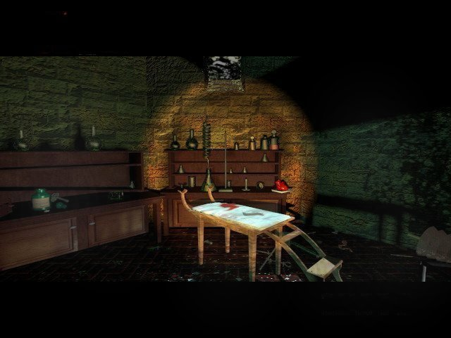
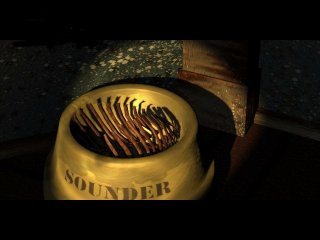

"Haaasshaaaas"
Eastereggs, stuff the makers put in their games and nobody knows about it. Like saying to someone:'I have a really good joke. But I'm not going to tell you.' One easteregg in the seventh guest was the painting of George Sanger in the Gallery. The 11th hour has eggs too. And secrets. See for yourself...
Graeme Devine was so kind to tell me one easteregg in the 11th hour that remained a secret for years! I saw the egg and it's a great one! Go to Dutton's room and look at the television. Now, type 'Kellyn'! If you typed this correctly, you see
a short video! I laughed until I stopped. Thanks Graeme, for sharing this wonderful egg.
The old open house code in the seventh guest was: Zaphod Beeblebrox. There is a code for the eleventh hour, it's not the old one, but you can try. For years nobody could crack it, but Athena X could. Here are her findings:
Type:Don R Zaphod B (spaces after Don, R, Zaphod and B) Then type the following:
e = the olive in a stein riddle
x = the main menu
g = The final movie where you have to pick a door
a = endpuzzle disc 1 Modern Art
s = endpuzzle disc 2 Triangle
d = endpuzzle disc 3 Beehive
f = endpuzzle disc 4 anthropod
Thanks Athena X!
Also, when you completed the game, you can go to the map and click on every room in the house.
You've heared of travelling through time, the 11th hour has something like
that: Complete the puzzle of the horses in the hall. Look at the clock. Place
the hand left above the clock. When you find the correct position, the cursor
will blink. Click. Use the eyeball on the clock to zoom in. Move with your cursor
over the numbers of the clock. Each number means a location. 1. Library.
2. Above the stairs, after ten 'o clock the music room.
3. Corridor above, after nine Temple's room.
4. Wall oposite music room, after eight the gameroom.
5. Outside Library facing the stairs, after eight the Knox room.
6. In front of the stairs, after eight bathroom.
7. Outside bathroom facing the stairs, after nine the attic.
8. Outside Burdens room, after nine attic room.
9. Dutton's room, after eleven dollroom.
10. Laboratory.
There is a riddle in the 11th hour that mentions 'a puppy called Sounder'. If
you look in the diningroom you will find a through with the name 'Sounder' on
it. 
Samantha sits behind computerscreens, sometimes she plays the seventh guest and types, although
the game only uses the mouse.
The Brian Dutton character was done by a different actor, Trilobyte couldn't get the original,
because he was busy.
The cd-rom in the lab is the seventh guest cd-rom. It plays a sample from the fara-astaroth song
from the Fat Man.
The bathroom had a dead animal on the floor (a Trilobyte?). But in the game, the animal was replaced
with a hot-water bottle.
In the playroom there is a board on the wall with little papers. They're from wine bottles. One has
the Stauf mansion on it. Stauf vintage: blordeaux.
You can travel faster through the mansion by clicking the right mouse button, everytime you go from one spot to another. Also the stairs have secret hot spots. When you look from the left (facing the clock) or right (your back to the library door) you see your cursor turning into a beckoning one. You have to move your cursor slowly over the stairs, you'll find it. The same story applies at the top of the stairs, if you look carefully you can go down the stairs while you weren't directly above it. You can find these hotspots in the screens one step away from the stairs, both left and right.
There are two Stauf paintings in the house, one is in the gallery, the other is above the music room puzzle.
The medicinebottle in the lab has a label, the label has the name of the doctor in the movie.
Secret passages: Click on the top of the box in the attic. The picture should change position, now click on the
box, the cursor should be beckoning. Now you dive into the box, enjoy the ride, you end up in the game-room.
Click on the strange door in the lab, the bars move, click on it again and you fly through the
crypt.
In the library, go the the globe, you see a little statue on the wall behind it, click on it.
Now you're in front of it. Click on it again and of you go.
In Temple's room there are three doors. The one on the left goes back, the other
two have routes that change everytime.